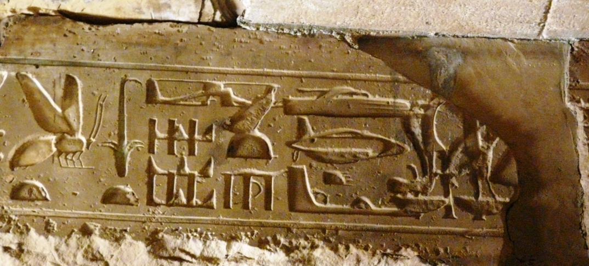
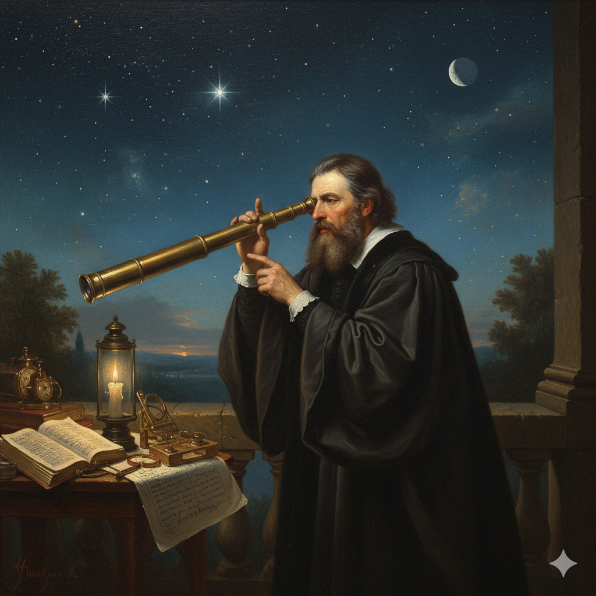
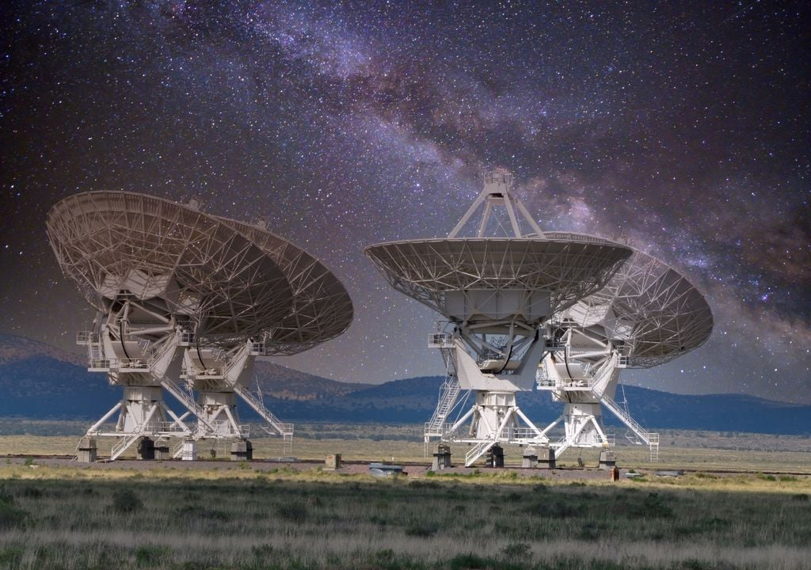
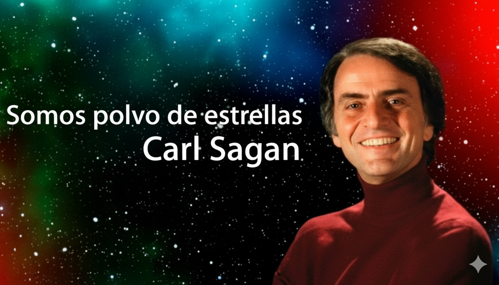
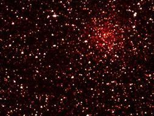
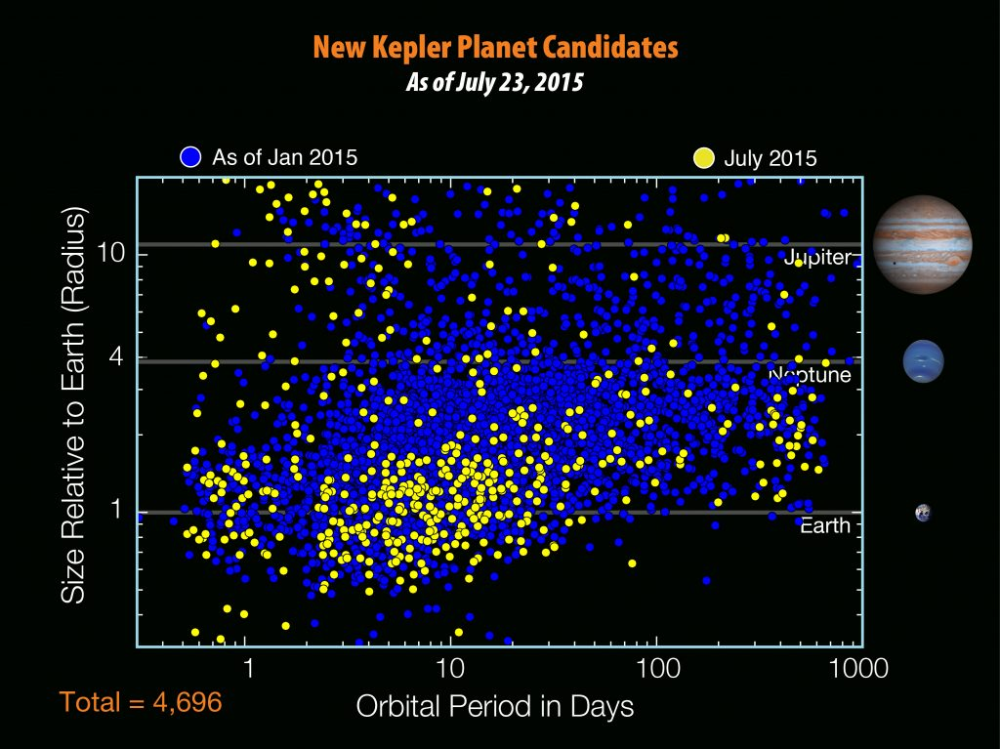
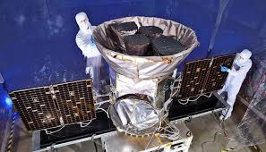
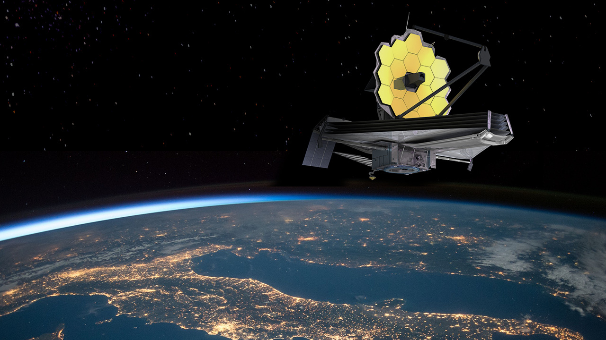
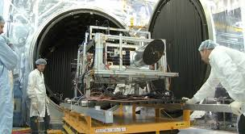

La Búsqueda de Vida Más Allá de la Tierra
Un viaje a través del tiempo y el espacio
Antigüedad — Mitos y civilizaciones estelares
Culturas antiguas imaginaron dioses y visitantes venidos desde las estrellas; eran solo mitos pero inspiraron la curiosidad por la vida fuera de la Tierra.

Siglo XVII — Primeras observaciones astronómicas
Galileo, Kepler y otros apuntaron con telescopios hacia el cielo por primera vez; la idea de que podia existir más mundos como la Tierra comenzó a tomar forma científica.

Siglo XX — La era espacial
El surgimiento de radiotelescopios y proyectos como SETI marcaron el inicio de una búsqueda sistemática de señales inteligentes.

1970s - 1990s — Carl Sagan y la divulgación del cosmos

El astrónomo Carl Sagan transformó la ciencia en poesía. Desde el proyecto Voyager hasta la serie “Cosmos”, promovió la idea de que la humanidad es polvo de estrellas buscando sus orígenes.
2009 - 2018 — Misión Kepler

El 8 de abril de 2009, la nave espacial Kepler tomó su primera instantánea del campo de diamantes en el cielo que estudiaría durante los próximos cuatro años. El telescopio Kepler descubrió más de 2.600 exoplanetas confirmados. Su legado permitió crear el dataset “Kepler Objects of Interest (KOI)”.
2014 - 2018 — Misión K2

Tras un fallo técnico, Kepler renació como K2, observando diferentes regiones del cielo y sumando más exoplanetas al catálogo cósmico.
2018 - Presente — TESS

TESS continúa la búsqueda, identificando miles de planetas potencialmente habitables y expandiendo el catálogo TOI (TESS Objects of Interest).
2022 - Presente — James Webb Space Telescope (JWST)

El JWST observa el universo en infrarrojo, permitiendo analizar atmósferas exoplanetarias y detectar indicios químicos compatibles con vida.
Presente — NEOSSat

El satélite canadiense NEOSSat detecta asteroides, basura espacial y exoplanetas cercanos, contribuyendo al conocimiento del entorno espacial próximo.
“Somewhere, something incredible is waiting to be known.”
— Carl Sagan